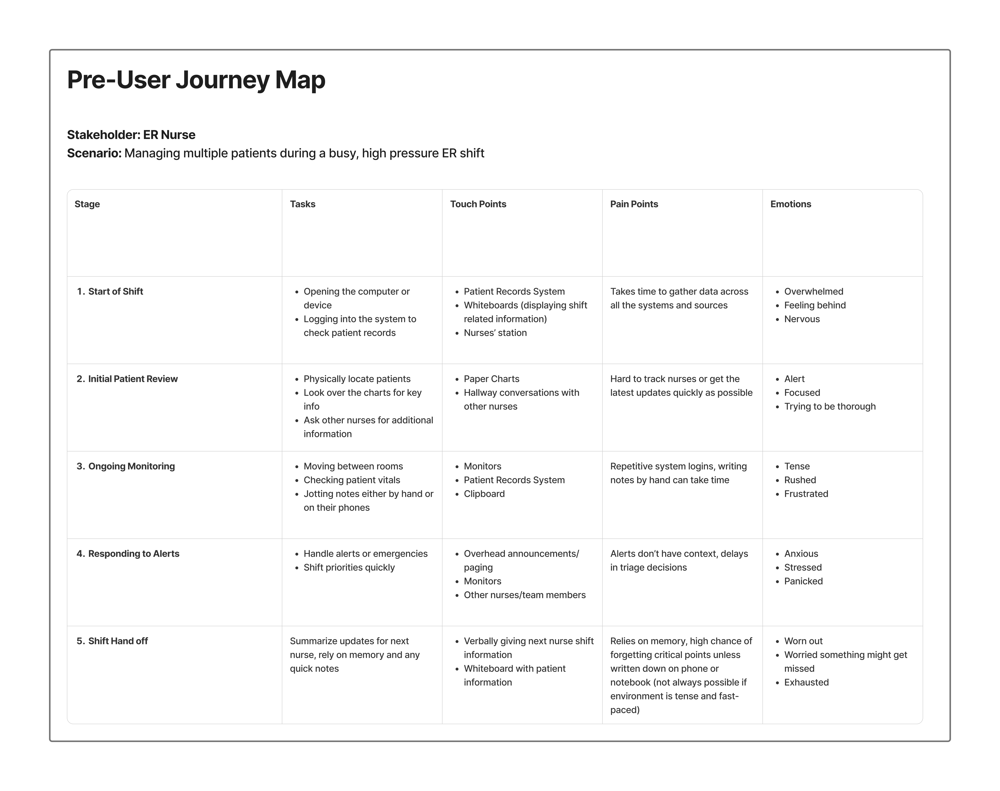
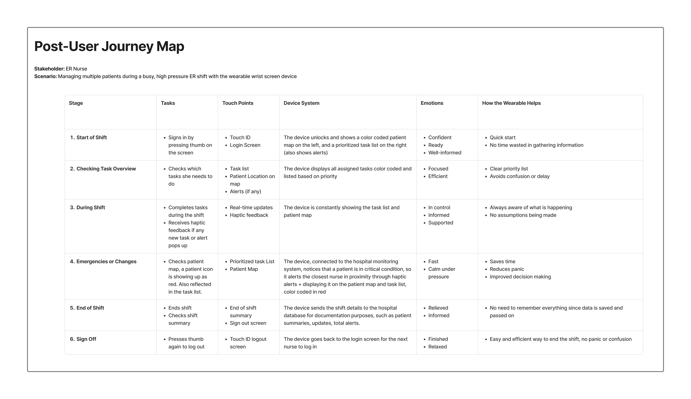
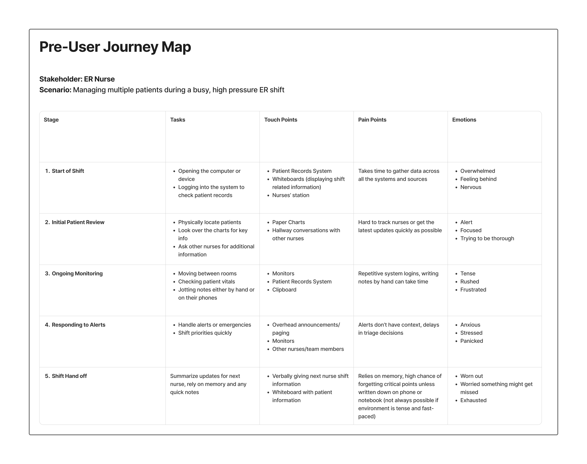
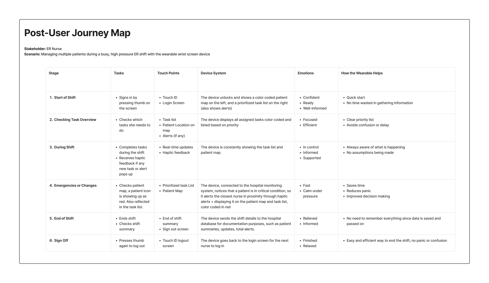

Central
June 2025 - August 2025
ROLE
Product Designer
User Researcher
SKILLS
Secondary User Research
User Research Analysis
High Fidelity Prototyping
TOOLS
Figma
Perplexity
ChatGPT
Microsoft Excel
TYPE
School Group Project
OVERVIEW
As a part our GBDA301 course, we were tasked with designing a speculative or current technology-based service intervention to address one meaningful inefficiency within the Emergency Room (ER) system.
In a group of 6, we decided to explore how ER nurses struggle to monitor patients, manage tasks, and respond to condition changes efficiently during intense ER activity due to fragmented systems, causing delays and increased risk in patient care.
This led to our research question: How might we help ER nurses monitor patients, prioritize tasks, and respond to condition changes in real time to reduce delays and risks in care during high-pressure situations in the ER?
THE SOLUTION
We designed a wearable wrist device that allows nurses to efficiently manage patients, prioritize tasks, and stay on top of alerts all in one place. The goal was to cut through the chaos during high intensity shifts, caused by the fragmentation of information, and optimize the nurse’s workflow and allow them to work in confidence. The following 6 screens are what the MVP consists of:
Enter Screen

Patient Emergency Screen

Patient Profile Screen

Log Your Task Screen

Standard State Screen

Log Out Screen

PRODUCT FEATURES
01 - Patient Map
The patient map is located on the left of the screen. It lets nurses see which patients are in which room for quicker navigation. These patient icons are color-coded as well: blue for stable, red for emergencies.
02 - Task List
The task list is located on the right of the screen. it allows the nurses to see a live, priority based list that updates as condition changes, with clear color cues during emergencies.
03 - Patient Information
Upon clicking on the patient icon, the nurse can see a general overview of the patients information and vitals.
04 - Haptic Alerts + Code Blue
Nurses receive haptic feedback for updates, plus a dedicated Code Blue button that alerts nearby nurses as well for additional assistance during emergencies.
SECONDARY USER RESEARCH
I was responsible for conducting secondary user research to help discover what some of the pain points are when it comes to nurses, which then I presented to my group members to gather their input as well. I gathered 9 research journals & articles that focused on 3 main thing: The communication gap between patients and doctors & patients and nurses, systematic & operational issues in the ER and their impact, and the fragmentation of information throughout the ER.
USER RESEARCH ANALYSIS
To make sense of my research, I created two user journey maps and a service blueprint. The first journey captures a nurse’s experience before our device; the second shows the after state and where the workflow improves. The service blueprint maps the end-to-end service, following Rachel, an ER nurse, as she moves through routine tasks and responds to a patient (David) emergency.
 



LOW FIDELITY PROTOTYPE
I was responsible for creating the physical low fidelity prototype of the product, where I collaborated closely with my group member who led the UI of the screens. For the sleeve, I bought a leg warmer from Dollarama. I then slide my phone case into it, which gave it a secure fit. I used a red wrap-around band to represent the haptic feedback and blue electric tape for the Code Blue button. It was scrappy and low-budget, but it got the idea across efficiently, which was our main goal. With more time and budget, I would love to upgrade this prototype using more reliable and durable materials.
The UI for the low fidelity prototype looks drastically different than our final product since we went through several iterations.
TESTING
To test our product, we conducted a bodystorming session. We simulated an ER waiting area with a check-in desk and two patient rooms. At the front desk, our note-takers captured think-aloud feedback and pros/cons from each session. We also staged a nurse, two patients, and a narrator to guide the scenario. Using the tables and chairs already in the room, we arranged a simple floor plan to match our flow.
After testing, we had 3 key findings:
01 - Patient Location & Task Completion
Users found the patient location feature and task completion feature to be useful. These features helped ER nurses monitor patients and priortize important tasks, allowing them to execute their tasks more efficiently, linking back to our research question.
02 - Real-Time Updates
Users were fond of the real-time updates. Relating it to the research question, we kept focus on condition changes in real time. The feedback we received regarding real-time updates allows us to see the importance of it and how our product incorporates it.
03 - Overall Product Impact
Users found that the overall product was able to reduce delays during high-pressure situations in the ER. The product's core features helped to organize tasks, requirments, and emergencies in a way that supports nurses.
EXPERT FEEDBACK
On presentation day, we had the chance to share our work with healthcare professionals as well as researchers from the University of Waterloo’s Systems Design Engineering faculty.
They stated that the core problem we were tackling, which is the fragmentation of information, is a big issue in healthcare today. They were fond of our solution, but also raised their concerns. For example: what if a nurse doesn’t have full mobility in their arms? How would the screens be adapted for nurses with color blindness? They also encouraged us to think about the logistical and financial challenges, since our concept is definitely ambitious and a lot of thought would need to go behind the implementation.
If we continue developing this project on our own, we’d certainly like to incorporate that feedback and keep collaborating with healthcare experts to make the solution as practical and supportive for nurses as possible.
KEY TAKEAWAYS
The biggest thing I learned is that refinement matters. We started with a digital hologram watch and narrowed it to a digital arm sleeve that’s simpler and more practical in the ER. Focusing the scope helped us decide what to keep and what to cut from our previous idea, so the solution targets the core problem instead of trying to do everything all at once.
We want to further refine the prototype and potentially run a hospital simulation with real nurses to see how it affects coordination and efficiency under pressure. With more development, we’ll work through the logistical challenges that are hard to predict in a classroom setting.